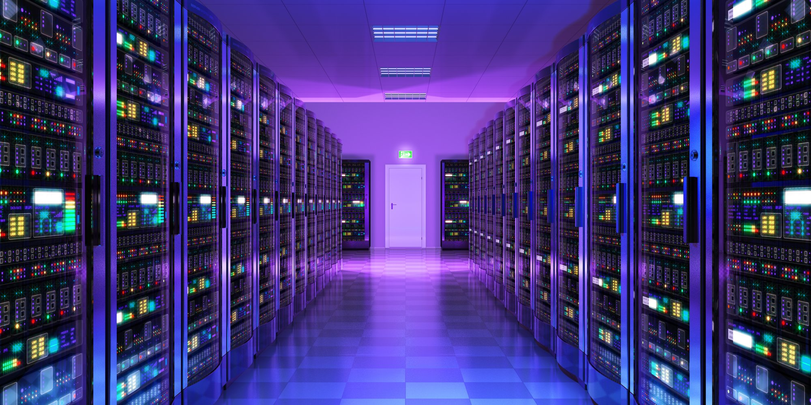
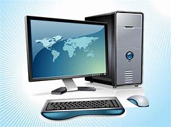

REDE DE COMPUTADORES
Redes de computadores são conjunto de máquinas conectadas que compartilham informações e recursos A distância e o tipo de equipamentos conectados são fatores que ajudam a determinar os tipos de redes.O tipo de rede que uma empresa precisa varia de acordo com as suas necessidades; Não é possível ter uma empresa sem uma rede de computadores.LER MAIS
5 FERRAMENTA HACKER
os ataque hacker vem crescendo a cada dia os grande ataque vem das ferramentas de teste vulnerabilidade,scan,varedura, nesse post voce vai conhecer as principais ferramenta de ataque hackerLER MAIS
COMANDOS BASICOS SQL

a linguagem sql é facil aprendizado , uma lingaguem de DB(BANCO DE DADOS) nessa tutorial mostrarei os comandos basicos do sql, eles sao agrupados em DML(CREATE DATBASE, CREATE TABLE,DROP TABLE,ALTER TABLE) DDL(INSERT INTO,UPDATE,SELECT,DELETE)LER MAIS
COMPONETES DE COMPUTADOR

Os computadores veio tomando a casa da população mundial , com grande avanço da tecnologia 92% da população mundial tem um computador ou notebook em suas casas vamos fala um pouco de cada componente e explica suas função para o uso do computador , cada componente desses é importante um interliga o outro. LER MAIS